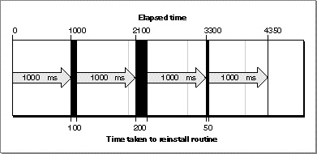
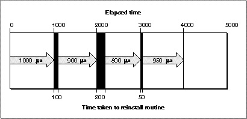

Legacy Document
Important: The information in this document is obsolete and should not be used for new development.
Important: The information in this document is obsolete and should not be used for new development.


The Extended Time Manager
The extended Time Manager (available with system software version 7.0 and later) contains all the features of earlier Time Managers, with several extensions intended primarily to provide drift-free, fixed-frequency timing services. These services, which ensure that a routine is executed promptly after a specified delay, are important for sound and multimedia applications requiring precise timing and real-time synchronization among different events.In the original and revised Time Managers, the value passed to
PrimeTimeindicates a delay that is relative to the current time (that is, the time when you executePrimeTime). This presents problems if you attempt to implement a fixed-frequency timing service by having the task callPrimeTime. The problem is that the time consumed by the Time Manager and by any interrupt latency (which is not predictable) causes the task to be called at a slightly slower and unpredictable frequency, which drifts over time. In
Figure 3-1, the desired fixed frequency of 1000 microseconds cannot be achieved because the Time Manager overhead and interrupt latency cause a small and unpredictable delay each time the task is reactivated.Figure 3-1 Original and revised Time Managers (drifting, unpredictable frequency)
The extended Time Manager solves this problem by allowing you to reinstall a task with an execution time that is relative to the time when the task last expired--not relative to the time when the task is reinstalled. The extended Time Manager compensates for the delay between the time when the task last expired and the time at which it was reinstalled, thereby providing a truly drift-free, fixed-frequency timing service.
For example, if your application needs to execute a routine periodically at 1-millisecond intervals, it can reactivate the existing Time Manager queue element by calling
PrimeTimein the task with a specified delay of 1 millisecond. When the Time Manager receives this new execution request, it determines how long ago the previousPrimeTimetask expired and then decrements the specified delay by that amount. For instance, if the previous task expired 100 microseconds ago, then the Time Manager installs the new task with a delay of 900 microseconds. This technique is illustrated in Figure 3-2.Figure 3-2 The extended Time Manager (drift-free, fixed frequency)
The extended Time Manager implements these features by recognizing an expanded task record and providing a new procedure,
InsXTime. The Time Manager task record for the extended Time Manager looks like this:
TYPE TMTask = {extended Time Manager task record} RECORD qLink: QElemPtr; {next queue entry} qType: Integer; {queue type} tmAddr: ProcPtr; {pointer to task} tmCount: LongInt; {unused time} tmWakeUp: LongInt; {wakeup time} tmReserved: LongInt; {reserved for future use} END;Once again, your application fills in thetmAddrfield. You should settmWakeUpandtmReservedto 0 when you first install an extended Time Manager task. The remaining fields are used internally by the Time Manager. As in the revised Time Manager, thetmCountfield holds the time remaining until the scheduled execution of the task (this field is set byRmvTime).The
tmWakeUpfield contains the time at which the Time Manager task specified bytmAddrwas last executed (or 0 if it has not yet been executed). Its principal intended use is to provide drift-free, fixed-frequency timing services, which are available only when you use the extended Time Manager and only when you install Time Manager tasks by calling the newInsXTimeprocedure.When your application installs an extended Time Manager task (by calling the
InsXTimeprocedure), the behavior of thePrimeTimeprocedure changes slightly, as described earlier in this section. If the value of thetmWakeUpfield is zero whenPrimeTimeis called, the delay parameter toPrimeTimeis interpreted as relative to the current time (just as in the original Time Manager), but the Time Manager sets thetmWakeUpfield to a nonzero value that indicates when the delay time should expire. When your application callsPrimeTimewith a Time Manager task whosetmWakeUpfield contains a nonzero value, the Time Manager interprets the specified delay as relative to the time that the last call toPrimeTimeon this task was supposed to expire.
The extended Time Manager allows for a previously impossible situation that may lead to undesirable results. It is possible to call
- Note
- Nonzero values in
tmWakeUpare in a format that is used internally by the Time Manager. This format is subject to change. Your application should never use the value stored in this field and should either set it to 0 or leave it unchanged. When you first create an extended Time Manager task record, make sure that the value of thetmWakeUpfield is 0; otherwise, the Time Manager may interpret it as a prior execution time. ·PrimeTimewith an execution time that is in the past instead of in the future. (In the original and revised Time Managers, only future execution times are possible.) This situation arises when the value of thetmWakeUpfield specifies a time in the past and you issue a newPrimeTimerequest with a delay value that is not large enough to cause the execution time to be in the future. This may occur when fixed, high-frequency execution is required and the time needed to process each execution, including the Time Manager overhead, is greater than the delay time between requests.When your application issues a
PrimeTimerequest with atmWakeUpvalue that would result in a negative delay, the actual delay time is set to 0. The Time Manager updates thetmWakeUpfield to indicate the time when the task should have been performed (in the past). Because the actual delay time is set to 0, the task is executed immediately. If your application continually issuesPrimeTimerequests for times in the past, the Time Manager and thetmAddrtasks consume all of the processor cycles. As a result, no time is left for the application to run. Because this situation is a function of processor speed, you should ensure compatibility by using the slowest processors to test applications that use extended Time Manager features. Another solution to this problem is to vary the wakeup frequency according to the processing power of the computer.